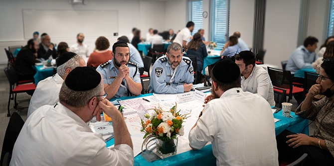
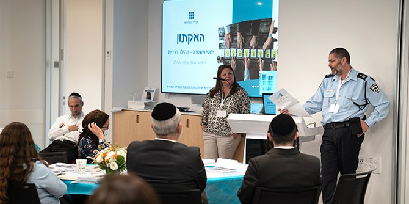

צילום: יריב ויינברג, סימנים
בתחילת חודש מרס פנה תת-ניצב יעקב כהן לצוות תוכניות מנדל לפיתוח מנהיגות בקהילה החרדית בבקשה מאתגרת: מפכ"ל המשטרה מינה אותו לעמוד בראש צוות אסטרטגי לגיבוש תוכנית פעולה שתביא לשיקום האמון בין המשטרה לקהילה החרדית, והוא מבקש את עזרת התוכנית ובוגריה בגיבוש תוכנית הפעולה. על הפרק: מיפוי הפערים, גיבוש מדיניות והצבעה על מיזמים שיביאו לשינוי המצב.
צוות מכון מנדל למנהיגות קיבל על עצמו לבחון דרכים שבהן יוכל לסייע לעבודת המטה המשטרתית, וסוכם כי הצוות יוביל מפגשים עתיים עם בוגרים רלוונטיים לשם גיבוש רשימת המלצות. בפגישות ישתתפו, במידת הצורך והאפשרות, אנשי צוות העבודה המשטרתי וגורמים נחוצים אחרים. את התהליך השלם מוביל הרב ד"ר אביעד הולנדר, חבר סגל ההוראה בתוכנית ואחראי על המענה לבוגריה.
במקביל לעריכת שיחות עומק עם בוגרים ועם גורמים מגוונים בקהילה החרדית, הופץ שאלון שעליו ענו יותר מ-60 בוגרים ובוגרות. המשיבים פירטו את החסמים ליצירת אמון בין המשטרה לקהילה החרדית, על-פי ניסיונם המקצועי וההיכרות האישית שלהם עם מגזרי-משנה של הקהילה. כמו כן התבקשו המשיבים לשאלון להציע אפיקי פעולה במשטרה ובקהילה החרדית אשר יסייעו למימוש התוכנית המשטרתית להגברת הביטחון האזרחי בקהילה החרדית.
ניתוח השאלונים מיקד את תשומת הלב בחמישה היגדים המצויים בתשתית השיח החרדי בנוגע ליחסיו עם המשטרה:
הצעד הבא היה קיום האקתון – יום סיעור מוחות בקבוצות חשיבה – בנושא יחסי המשטרה והקהילה החרדית. ההאקתון נערך ב-21 באפריל בבניין קרן מנדל בירושלים ולשם תכנונו והובלתו גובש פורום בהשתתפות סא"ל (מיל.) ליאור פרי, מנהל תוכנית מנדל למנהיגות חינוכית בצה"ל; נילי טל, יועצת ארגונית המשמשת כחברת סגל בתוכנית מנדל למנהיגות חינוכית בצה"ל ומנחה אישית בתוכנית הנשים לפיתוח מנהיגות בקהילה החרדית; הרב אשר מלמד, אשר שירת במשך שנים כרב במשטרה וכיום עומד בראש ארגון העוסק במוגנות ובטיפול בנפגעי ונפגעות פגיעה מינית; ובני שחר, עמית תוכניות מנדל לפיתוח מנהיגות בקהילה החרדית וקצין ממד"ה במשטרת ישראל.
בהאקתון השתתפו יותר מ-40 בוגרים ובוגרות של תוכניות מנדל לפיתוח מנהיגות בקהילה החרדית לצד בכירים במשטרת ישראל והמשרד לביטחון הפנים.
בפתיחת היום הציגה יעל הס, מנהלת המכון, את רציונל הפעילות של מכון מנדל למנהיגות. תת-ניצב יעקב כהן פירט לפני המשתתפים את האתגרים העומדים בפני המשטרה, וד"ר נעמי פרל, מנהלת תוכניות מנדל לפיתוח מנהיגות בקהילה החרדית, הציגה את מאפייני בוגרי התוכניות לצד יעדי ההאקתון. ד"ר אביעד הולנדר הציג נתונים רלוונטיים מניתוח השאלונים, ובהם רמת המוטיבציה הגבוהה של הבוגרים והבוגרות לקחת חלק בפעילות מעשית לטיפוח יחסי המשטרה והקהילה החרדית:
נילי טל חשפה את המשתתפים לעקרונות תהליך design thinking שעליו מבוסס ההאקתון והסבירה את כללי העבודה למהלך היום, ולאחר היכרות קצרה בין נציגי המשטרה לבוגרי תוכניות החרדים התחלקו המשתתפים והמשתתפות לשני חדרים:
בחדר אחד הובילו ליאור פרי ונעמי פרל שיח בין קציני המשטרה לנציגי המשרד לביטחון הפנים. בפני הפורום הופיעו
פייני סוקניק, מייסדת ויו"ר עמותת "באשר תלכי" ובוגרת בית ספר מנדל למנהיגות חינוכית, והרב מנחם בומבך, מנהל רשת המוסדות "נצח" וחבר צוות בכיר במכון מנדל למנהיגות, שהציגו את הישגיהם בפעילות חינוכית וחברתית בקהילה החרדית כמודל לעבודת שדה אפקטיבית שבוגרי התוכניות מבצעים בקהילה החרדית.

צילום: יריב ויינברג, סימנים
בחדר השני הובילו נילי טל ואביעד הולנדר מעגלי שיח שדנו ב-5 הנחות היסוד המצויות בתשתית השיח החרדי בנוגע ליחסיו עם המשטרה. המשתתפים התבקשו למפות את ההשלכות של הנחות אלו, את הגורמים המחזקים אותן או מחלישים אותן, ואת בעלי העניין בשימור המצב או בשינויו. כמו כן התבקשו לסמן אילו מוטיבים הם החשובים ביותר, ואילו כיווני פעולה הם הישימים ביותר. לאחר גיבוש מסקנות הצטרפו קציני המשטרה לשולחנות השונים ושמעו את סיכום הדברים והמסקנות, לצד רעיונות ראשוניים למיזמים אפשריים לשיפור המצב. את התובנות העיקריות שלהם ואת המיזמים הציגו קציני המשטרה ונציגי הקבוצות. בסיום היום הביע תת-ניצב יעקב כהן את הערכתו על התהליך המהיר והממוקד, והביע את תקוותו לגיבוש מסקנות מעשיות מהתובנות שגובשו במהלך היום. אביעד הולנדר הציב יעד להמשיך ולקיים פורומים ממוקדים להעמקה בשדות הפעולה השונים ובהשתתפות גורמי מקצוע משטרתיים וחרדים, ונעמי פרל חתמה בתודות על האמון והזמינה לקיים ערוץ פתוח של הידברות, חשיבה משותפת וקידום יוזמות מעשיות עם סגל התוכנית ובוגריה.
{kind=link}
{kind=link}
{kind=link}
{kind=link}